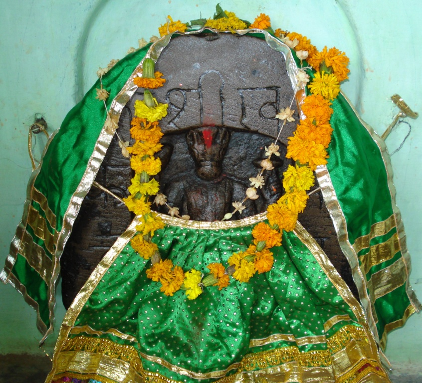

<?xml version="1.0" encoding="UTF-8"?><rss version="2.0"
	xmlns:content="http://purl.org/rss/1.0/modules/content/"
	xmlns:wfw="http://wellformedweb.org/CommentAPI/"
	xmlns:dc="http://purl.org/dc/elements/1.1/"
	xmlns:atom="http://www.w3.org/2005/Atom"
	xmlns:sy="http://purl.org/rss/1.0/modules/syndication/"
	xmlns:slash="http://purl.org/rss/1.0/modules/slash/"
	>

<channel>
	<title>Hayagreev Keshav &#8211; Varanasi Temples</title>
	<atom:link href="index.html" rel="self" type="application/rss+xml" />
	<link>../../../../index.html</link>
	<description>Temples of Varanasi as referred to in Kashi Khand</description>
	<lastBuildDate>Thu, 19 Jun 2025 05:16:46 +0000</lastBuildDate>
	<language>en-US</language>
	<sy:updatePeriod>hourly</sy:updatePeriod>
	<sy:updateFrequency>1</sy:updateFrequency>
	<generator>https://wordpress.org/?v=4.6.29</generator>
	<item>
		<title>HAYAGREEVA KESHAV</title>
		<link>../../../../vishnu-temples/hayagreeva-keshav/index.html</link>
		<pubDate>Tue, 11 May 2010 10:59:15 +0000</pubDate>
		<dc:creator><![CDATA[admin]]></dc:creator>
				<category><![CDATA[Hayagreev Keshav]]></category>
		<category><![CDATA[Vishnu Temples]]></category>
		<category><![CDATA[anand]]></category>
		<category><![CDATA[hayagreeva]]></category>
		<category><![CDATA[hayagreeva images]]></category>
		<category><![CDATA[hayagreeva kumar ghanta]]></category>
		<category><![CDATA[hayagreeva worship]]></category>
		<category><![CDATA[keshav]]></category>
		<category><![CDATA[lord hayagriva]]></category>

		<guid isPermaLink="false">../../../../p=655.html</guid>
		<description><![CDATA[Kashi Khand mentions one Hayagreev Teerth where Lord Vishnu is present in the form of Hayagreev Keshav. The devotees worshipping Hayagreev Keshav will reach Lord’s Lotus feet. Hayagreev Teerth is not in existence now. (HAYAGREEV KESHAV) &#8212;&#8212;&#8212;&#8212;&#8212;&#8212;&#8212;&#8212;&#8212;&#8212;&#8212;&#8212;&#8212;&#8212;&#8212;&#8212;&#8212;&#8212;&#8212;&#8212;&#8212;&#8212;&#8212;&#8212;&#8212;&#8212;&#8212;&#8212;&#8212;&#8212;&#8212;&#8212;&#8212;&#8212;-   Kashi Khand, Chapter 61, Shlok 23   हयग्रीवे महातीर्थे मां हयग्रीवकेशवम् प्रणम्य प्राप्नुयान्नूनं तद्विष्णो: परमं पदम् &#160; [&#8230;]]]></description>
				<content:encoded><![CDATA[<p>Kashi Khand mentions one Hayagreev Teerth where Lord Vishnu is present in the form of Hayagreev Keshav.</p>
<p>The devotees worshipping Hayagreev Keshav will reach Lord’s Lotus feet. Hayagreev Teerth is not in existence now.</p>
<p></p>
<p style="text-align: center;"><strong>(HAYAGREEV KESHAV)</strong></p>
<p style="text-align: center;">
<p><strong>&#8212;&#8212;&#8212;&#8212;&#8212;&#8212;&#8212;&#8212;&#8212;&#8212;&#8212;&#8212;&#8212;&#8212;&#8212;&#8212;&#8212;&#8212;&#8212;&#8212;&#8212;&#8212;&#8212;&#8212;&#8212;&#8212;&#8212;&#8212;&#8212;&#8212;&#8212;&#8212;&#8212;&#8212;-</strong></p>
<p><strong> </strong></p>
<p><strong>Kashi Khand, Chapter 61, Shlok 23</strong></p>
<p><strong> </strong></p>
<p><strong>हयग्रीवे महातीर्थे मां हयग्रीवकेशवम्</strong></p>
<p><strong>प्रणम्य प्राप्नुयान्नूनं तद्विष्णो: परमं पदम्</strong></p>
<p>&nbsp;</p>
<p><strong>(Lord Vishnu Says) I am called present in form of Hargriva Keshava at Hayagriva Teerth. By simply worshipping me, a devotee surely attains the supreme post of Vishnu. </strong></p>
<p><strong> </strong></p>
<p><strong>&#8212;&#8212;&#8212;&#8212;&#8212;&#8212;&#8212;&#8212;&#8212;&#8212;&#8212;&#8212;&#8212;&#8212;&#8212;&#8212;&#8212;&#8212;&#8212;&#8212;&#8212;&#8212;&#8212;&#8212;&#8212;&#8212;&#8212;&#8212;&#8212;&#8212;&#8212;&#8212;&#8212;&#8212;&#8212;</strong></p>
<p style="text-align: left;">
<p><strong><span style="text-decoration: underline;">LOCATION OF HAYAGREEV KESHAV</span></strong></p>
<p>Hayagreev Keshav is located at B.3/25 near Anandmayee Hospital at Bhadaini.  People can reach this place by auto/car or cycle rickshaw. If one approaches from Sonarpura area, Hayagreev Keshav will be just before the Hospital.  This place of worship also houses Hayagreeva Yogini which is mentioned in Kashi Khand, Chapter 45.</p>
<p><strong><span style="text-decoration: underline;">TYPES OF POOJA</span></strong></p>
<p>The place is open for worship throughout.</p>
]]></content:encoded>
			</item>
	</channel>
</rss>
